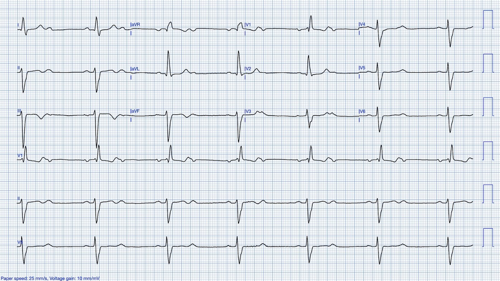
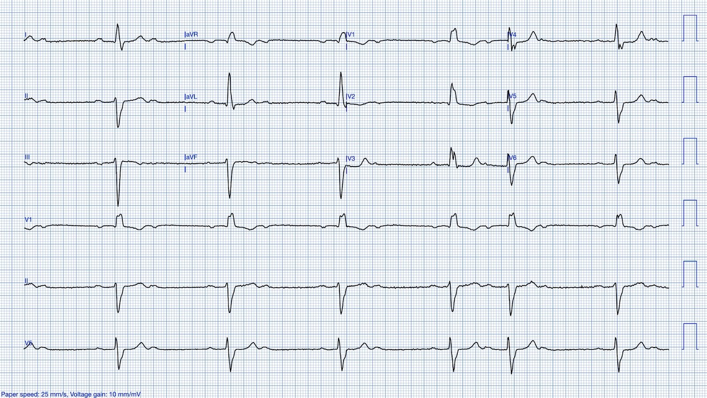
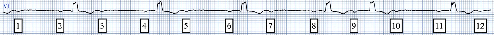
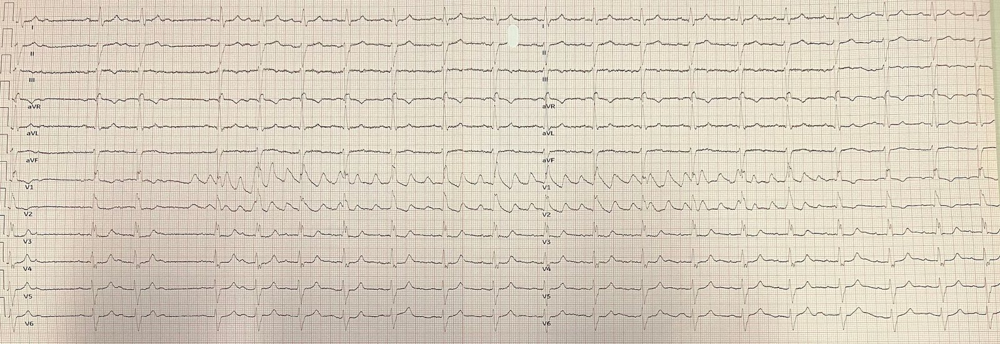
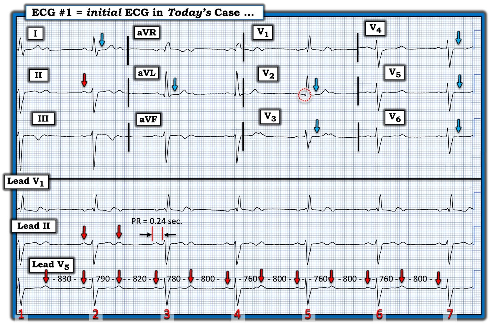

12/11/2024 — Blốc AV độ 2: đây là Mobitz I hay II? Và vì sao các khoảng P-P thay đổi?
Bản dịch tiếng Việt của bài "2nd degree AV block: is this Mobitz I or II? And why the varying P-P intervals?" – Dr. Smith’s ECG Blog. Giữ nguyên toàn bộ 6 hình ảnh của bản gốc.
Tác giả: Willy Frick
Một người đàn ông trung niên đến để phẫu thuật ngoại trú theo chương trình. Điện tâm đồ sau đây được ghi tại khu vực tiền phẫu.


Bạn nghĩ gì?
Điện tâm đồ cho thấy nhịp xoang với tần số khoảng 78 và dẫn truyền AV 2:1, kèm blốc nhánh phải (right bundle branch block) và blốc phân nhánh trái trước (left anterior fascicular block). Khoảng PR ở các nhát được dẫn truyền kéo dài, khoảng 220 ms. Những độc giả tinh mắt có thể nhận thấy khoảng PP thay đổi.
Một chẩn đoán phân biệt là PAC bị blốc (không dẫn truyền), một nguyên nhân thường gặp gây khoảng ngưng trên điện tâm đồ. Tuy nhiên, vì các sóng P đều có hình dạng giống hệt nhau, cách giải thích nhiều khả năng hơn là đáp ứng theo pha thất (ventriculophasic response). Cơ chế chính xác vẫn còn tranh cãi, nhưng dấu hiệu đặc trưng là các khoảng PP có chứa một phức bộ QRS ngắn hơn các khoảng PP không chứa phức bộ QRS. Đó chính xác là điều chúng ta thấy ở đây. Hiện tượng này cũng có thể gặp ở các dạng blốc tim khác (chẳng hạn blốc tim hoàn toàn). Xem bình luận của Ken Grauer bên dưới để biết thêm về vấn đề này.
Vì bệnh nhân này sắp được phẫu thuật theo chương trình, điều quan trọng là xác định đây là Mobitz I (lành tính) hay Mobitz II (cần tạo nhịp).
Vậy… đó là loại nào?
Trả lời: Bạn không thể chắc chắn nếu chỉ dựa vào điện tâm đồ này.
Cách thông thường để phân biệt blốc AV Mobitz I với blốc AV Mobitz II là so sánh các khoảng PR liên tiếp. Nếu khoảng PR kéo dài dần từ nhát này sang nhát kế tiếp, điều đó ủng hộ sinh lý Mobitz I, vốn hiếm khi có lợi từ tạo nhịp. Ngược lại, nếu khoảng PR hằng định, điều đó ủng hộ sinh lý Mobitz II, là một chỉ định tạo nhịp. Blốc 2:1 là một trường hợp đặc biệt, vì bản ghi không có các khoảng PR liên tiếp. Hình ảnh này có thể gặp ở cả sinh lý Mobitz I lẫn Mobitz II.
Bệnh sử thường hữu ích. Nếu bệnh nhân vốn khỏe mạnh và có lý do rõ ràng để có trương lực phế vị cao (như buồn nôn hoặc ngủ gà), nhiều khả năng đó là Mobitz I. Mặt khác, tiền sử ngất không nhất thiết chứng minh đó là Mobitz II. Đó là vì trương lực phế vị cao có thể gây ngất phản xạ, như trong ca này.
Bạn cũng có thể dùng các nghiệm pháp tại giường để thăm dò thêm. Các can thiệp làm tăng trương lực phế vị có xu hướng làm blốc Mobitz I nặng hơn. Có lẽ đáng ngạc nhiên là các nghiệm pháp cường phế vị thực ra có thể cải thiện dẫn truyền trong blốc Mobitz II. Đó là vì tần số xoang chậm hơn cho hệ His-Purkinje thêm thời gian để hồi phục. Điều ngược lại đúng với các nghiệm pháp làm giảm trương lực phế vị (tức là, chúng cải thiện dẫn truyền trong Mobitz I và làm dẫn truyền xấu đi trong Mobitz II).
Vì vậy, ví dụ: atropine và gắng sức đều sẽ cải thiện dẫn truyền trong blốc Mobitz I, nhưng làm dẫn truyền xấu đi trong Mobitz II. Ngược lại, xoa xoang cảnh sẽ làm dẫn truyền xấu đi trong blốc Mobitz I, nhưng cải thiện dẫn truyền trong Mobitz II.
Trong ca này, bạn có thể nghi ngờ blốc Mobitz II vì đã có bệnh lý dưới His (infra-Hisian) biểu hiện bằng blốc hai phân nhánh. Nhưng đây chỉ là phỏng đoán. Hóa ra, bệnh nhân đã được ghi lại điện tâm đồ trước khi được chuyên khoa tim mạch đánh giá.


Bạn nghĩ gì?
Đây là một điện tâm đồ cực kỳ hữu ích, vì giờ chúng ta có hai khoảng PR liên tiếp để so sánh với nhau (các sóng P đi trước phức bộ QRS 4 và 5). Tôi đã đánh số các sóng P bên dưới để tiện theo dõi:


Sóng P 8 và 9 đều dẫn truyền xuống thất. Có lẽ bạn chỉ cần nhìn bằng mắt là thấy, nhưng đo bằng compa xác nhận có PR kéo dài, do đó khẳng định blốc Mobitz I.
Vậy bệnh nhân có nên đi phẫu thuật không?
Để kiểm chứng thêm giả thuyết này, bác sĩ tim mạch đã xoa xoang cảnh trong khi ghi nhịp trên 12 chuyển đạo. Bản ghi được trình bày bên dưới:


Vài giây sau khi bắt đầu dải nhịp, bạn có thể thấy nhiễu do xoa xoang cảnh (rõ nhất ở V1-2). Khá bất ngờ, xoa xoang cảnh làm tần số xoang chậm lại đôi chút, và nhờ đó lập tức cải thiện dẫn truyền AV thành 1:1, ủng hộ blốc AV Mobitz II!
Bệnh nhân được thăm dò điện sinh lý (EP) và có khoảng HV kéo dài, điều này ủng hộ mạnh mẽ việc đặt máy tạo nhịp. Ông được cấy máy tạo nhịp hai buồng và diễn tiến tốt.
Những điểm cần học:
- Mobitz I và Mobitz II có thể cùng tồn tại trên cùng một bệnh nhân vào cùng một thời điểm
- Các nghiệm pháp tại giường có thể giúp làm rõ nguyên nhân của blốc AV 2:1

===================================
BÌNH LUẬN CỦA TÔI, bởi KEN GRAUER, MD (12/11/2024):
===================================
Các câu hỏi thường nảy sinh về những dạng khác nhau của blốc AV độ 2. Ca hôm nay mang lại nhiều hiểu biết sâu sắc, không chỉ nhờ ôn lại các khái niệm MẤU CHỐT về chủ đề này — mà còn nhờ minh họa một ca mà các nghiệm pháp tại giường có thể giúp phân biệt các loại blốc AV độ 2 — và trong đó bệnh nhân “đã không đọc sách giáo khoa”.
- Tôi tập trung bình luận vào một số khái niệm nâng cao bổ sung cho những gì đã được bàn trong bài tổng quan xuất sắc của Bs. Frick.
Xin nhấn mạnh: Với những ai đang tìm “câu trả lời nhanh” — người đàn ông trung niên hôm nay không nên được chấp thuận cho thủ thuật phẫu thuật ngoại trú theo chương trình nếu chưa được đánh giá thêm. Như tôi sẽ đề cập ngay sau đây — tôi cho rằng blốc AV 2:1 ở đây khá kín đáo, và có thể dễ bị bỏ sót nếu không đọc một cách hệ thống. Nhưng bất kể bạn có nhận ra blốc độ 2 hay không — “câu trả lời nhanh” — là bệnh nhân này không nên được chấp thuận phẫu thuật theo chương trình nếu chưa được đánh giá thêm.
- Như Bs. Frick đã nêu — cần khai thác thêm bệnh sử, đặc biệt vì một số bệnh nhân đôi khi không mấy chủ động kể về tiền sử tiền ngất hoặc ngất trừ khi được hỏi những câu hỏi khai thác kỹ.
- Tìm được một điện tâm đồ trước đây của bệnh nhân này để so sánh sẽ cực kỳ hữu ích (Các rối loạn dẫn truyền này là mới hay cũ?).
- Xin nhấn mạnh: Điện tâm đồ tiền phẫu theo chương trình này không bình thường. Ngay cả khi blốc AV độ 2 không được nhận ra ngay từ đầu — vẫn có một số bất thường điện tâm đồ đáng kể (như Bs. Frick đã nêu bật), bao gồm blốc AV độ 1 (khoảng PR = 0,24 giây) — và blốc hai phân nhánh dưới dạng RBBB/LAHB.
- Kín đáo hơn, nhưng quan trọng không kém — là câu hỏi các bất thường điện tâm đồ này có thể đã xảy ra khi nào? Sóng q khởi đầu nhỏ-nhưng-chắc-chắn-có ở chuyển đạo V2 (trong vòng tròn chấm chấm màu ĐỎ ở Hình 1) là không bình thường với RBBB này, xét rằng chắc chắn có một phức bộ QRS ba pha điển hình (rsR’ ) ở chuyển đạo V1 kế bên (tức là, Vậy là đã mất sóng r khởi đầu vốn thấy ở chuyển đạo V1 ).
- Thêm bằng chứng ủng hộ rằng nhồi máu thành trước không rõ thời điểm có thể là nguyên nhân của các bất thường hệ dẫn truyền nêu trên — đến từ tình trạng ST dẹt ở nhiều chuyển đạo (các mũi tên XANH), vốn không phải dấu hiệu điển hình của blốc hai phân nhánh trừ khi có bệnh tim nền. Và mặc dù sóng T đảo ngược ở các chuyển đạo dưới có thể chỉ đơn giản là hệ quả của các phức bộ QRS chủ yếu âm do LAHB — loại trừ nhồi máu cơ tim gần đây có vẻ là điều nên làm trước khi chấp thuận phẫu thuật theo chương trình.
- Cuối cùng — Bất kể có thấy blốc AV 2:1 hay không — vẫn có nhịp chậm rõ rệt (tần số ở mức 40 mấy nhịp/phút), bản thân điều này đã đáng được thăm dò trước khi chấp thuận phẫu thuật theo chương trình.
- Do đó: Câu trả lời “nhanh“ cho ca hôm nay (hiển nhiên chỉ trong vài giây) — là việc đánh giá thêm (và có thể đặt máy tạo nhịp) là cần thiết trước khi chấp thuận phẫu thuật theo chương trình.
==============================
Phần tiếp theo là một “phân tích chuyên sâu” vào một số điểm tinh tế phức tạp của blốc AV độ 2 dành cho những độc giả quan tâm đến việc đọc loạn nhịp nâng cao.
==============================
BẠN có thấy blốc AV 2:1 không?
Qua nhiều năm — thỉnh thoảng tôi gặp những bản ghi mà một blốc AV 2:1 bất ngờ khiến tôi phải DỪNG LẠI một chút để xác minh rằng nhịp trước mặt thật sự là blốc 2:1 (chứ không phải một sóng T hay sóng U ngụy trang nào đó). Nhịp hôm nay là một trường hợp như vậy — nhịp chậm rõ rệt khiến tôi nghi ngờ dẫn truyền 2:1 — nhưng các sóng T dẹt dễ gây nhầm lẫn ở nhiều chuyển đạo (Xem các mũi tên XANH ở chuyển đạo V4,V5,V6 trong Hình 1) lúc đầu khiến tôi băn khoăn đâu là sóng T hay sóng U hay sóng P “thừa” hay sự chồng lấp nào đó của cả hai? Và trước khi hủy một ca phẫu thuật theo chương trình đã lên lịch (khi bệnh nhân đã được chuẩn bị sẵn trong phòng tiền phẫu) — tôi muốn chắc chắn 100% rằng mình thật sự đang nhìn thấy blốc AV 2:1.
- Thời điểm của “nét sóng thêm” tiềm năng là yếu tố then chốt. Dùng compa đo là cách nhanh nhất và dễ nhất để kiểm tra XEM điều trông như một nét sóng P thừa có thật hay không (chứ không chỉ là một sóng T trông giống sóng P hay một sóng U nổi bật).
- Như có thể thấy từ các mũi tên ĐỎ trong Hình 1 — thời điểm của các nét sóng P tiềm năng này phù hợp với sự hiện diện của một sóng P thừa.
- Cần biết đến hiện tượng được gọi là loạn nhịp xoang theo pha thất (ventriculophasic). Ở cả blốc AV độ 2 và độ 3, thường thấy khoảng P-P thay đổi vượt quá mức dự kiến của một loạn nhịp xoang đơn thuần. Lý giải được đề xuất cho sự thay đổi khoảng P-P “theo pha thất” này — là khoảng P-P có một phức bộ QRS “kẹp” bên trong có xu hướng ngắn hơn một chút so với khoảng P-P nằm xa QRS — vì tưới máu mạch vành sẽ tốt hơn một chút ngay sau khi thất co bóp.
- Theo các khoảng P-P (tính bằng mili giây) mà tôi đã đo tỉ mỉ trên dải nhịp chuyển đạo V5 trong Hình 1 — có một loạn nhịp xoang theo pha thất kín đáo trong ca hôm nay (và nó “khớp” với mô hình điển hình là khoảng P-P ngắn hơn một chút khi có QRS nằm bên trong).
- ĐIỂM THEN CHỐT (PEARL): Lợi ích thực sự của việc nhận biết loạn nhịp xoang theo pha thất — là vì khoảng P-P thay đổi làm xê dịch nhẹ vị trí của sóng P không dẫn truyền — điều này cho phép chắc chắn hơn rằng nét sóng thêm tiềm năng thật sự là một sóng P (tức là, Điều này được thấy RÕ NHẤT trên dải nhịp dài chuyển đạo V1 trong Hình 1). Trong khi thoạt nhìn có thể khó phân biệt sóng P thừa với sóng T ở chuyển đạo II và V5 — Chẳng phải dễ hơn nhiều để nhận ra hình dạng sóng P hai pha riêng biệt của từng sóng P trên chuyển đạo V1 dài sao? Một sóng T sẽ không tạo ra nét lệch âm tròn ở phần cuối này, vốn khớp hoàn hảo với nét lệch âm tròn ở phần cuối của các sóng P xoang đi trước mỗi QRS — đến mức khi thấy hình ảnh này ở chuyển đạo V1 — tôi biết rằng nhịp là blốc AV độ 2 với 2 sóng P cho mỗi phức bộ QRS.


3 loại blốc AV độ 2:
Nhiều sách giáo khoa vẫn chia blốc AV độ 2 thành 2 nhóm: Mobitz I và Mobitz II. Thay vào đó, tôi luôn ưa chuộng cách tiếp cận của Marriott để mô tả blốc AV độ 2. Theo Marriott — có 3 (chứ không phải 2) Loại blốc AV độ 2. Đó là:
- Mobitz I (cũng chính là Wenckebach AV) — trong đó khoảng PR kéo dài dần cho đến khi một nhát bị rớt.
- Mobitz II — trong đó khoảng PR hằng định, cho đến khi một hoặc nhiều nhát bị rớt.
- Blốc AV 2:1 — trong đó không thể chắc chắn loại blốc AV độ 2 là Mobitz I hay Mobitz II. Như Bs. Frick đã nêu — tầm quan trọng lâm sàng của sự phân biệt này — là Mobitz I nhiều khả năng hơn hẳn là lành tính (tất nhiên còn tùy thuộc vào bối cảnh lâm sàng) — trong khi Mobitz II nhiều khả năng hơn hẳn sẽ cần tạo nhịp (do xu hướng đáng lo ngại của Mobitz II là đột ngột mất dẫn truyền không chỉ một, mà nhiều phức bộ liên tiếp — có thể dẫn đến ngưng thất).
Làm sao phân biệt Mobitz I với II khi có blốc AV 2:1?
Dù đã nói như trên — phần lớn thời gian chúng ta có thể phân biệt Mobitz I với Mobitz II với độ chính xác cao — chỉ đơn giản bằng cách ghi nhớ các đặc điểm lâm sàng sau:
- Mobitz I thường gặp hơn nhiều so với Mobitz II. Dù tỷ lệ phần trăm tương đối của 2 rối loạn dẫn truyền này có thể khác nhau, tùy theo bạn hành nghề điện sinh lý tim — nội khoa ngoại trú — hay điều trị bệnh nhân đến khám cấp cứu — Thống kê nghiêng hẳn về Mobitz I (tức là, Trong hơn 4 thập kỷ tôi nghiên cứu mọi blốc AV mà tôi gặp — vượt xa 90% hóa ra là Mobitz I ). Điều thiết yếu là không được bỏ sót các ca Mobitz II (vì cần chuyển đi đặt máy tạo nhịp) — nhưng về mặt thống kê, tuyệt đại đa số các ca mà những bác sĩ không chuyên về điện sinh lý tim gặp sẽ hóa ra là Mobitz I.
- Lý do Mobitz I có tiên lượng chung tốt hơn nhiều — là vì rối loạn nhịp này xảy ra ở mức cao hơn trong hệ dẫn truyền (thường là trong nút AV). Do đó — Mobitz I thường biểu hiện QRS hẹp (trừ khi có BBB nền) — Mobitz I dễ bị ảnh hưởng bởi tăng trương lực phế vị hơn, và có xu hướng đáp ứng tốt với Atropine khi dùng trong những giờ đầu của nhồi máu cơ tim thành dưới cấp (giai đoạn mà trương lực phế vị thường tăng tạm thời) — trong đó nhồi máu cơ tim thành dưới cấp có lẽ là bối cảnh lâm sàng thường gặp nhất có Mobitz I. Dù vậy — vẫn có những trường hợp ngay cả blốc AV độ 2 Mobitz I cũng cần tạo nhịp vĩnh viễn (tức là, khi Mobitz I đi kèm nhịp chậm rõ rệt và/hoặc bệnh nhân có triệu chứng rõ ràng).
- Ngược lại — Mobitz II xảy ra ở vị trí thấp hơn trong hệ dẫn truyền. Do đó — Mobitz II hay gặp nhất trong nhồi máu cơ tim thành trước cấp — thường có QRS giãn rộng (kèm BBB và/hoặc blốc phân nhánh) — và atropine khó có thể hiệu quả.
- Nhìn chung — khoảng PR dễ bình thường hơn với Mobitz II.
- Ngược lại — khoảng PR dễ kéo dài hơn với Mobitz I. Đó là vì ở những ca nhồi máu cơ tim thành dưới cấp có xuất hiện blốc AV — thường có sự xuất hiện tuần tự các rối loạn dẫn truyền. Nghĩa là, có xu hướng tiến triển tuần tự từ khoảng PR bình thường — sang blốc AV độ 1 — sang Mobitz I — và đôi khi, sang blốc độ 3 ở mức nút AV (tức là, với QRS hẹp). Và khi rối loạn dẫn truyền AV ở những bệnh nhân nhồi máu thành dưới này hồi phục — nó có xu hướng hồi phục theo trình tự ngược lại (tức là, lùi dần từ độ 3 — sang Mobitz I độ 2 — sang độ 1 — cho đến khi cuối cùng tái lập nhịp xoang với khoảng PR bình thường).
Những đặc điểm độc đáo của CA BỆNH hôm nay:
- Nhìn chung — hiếm khi (rất hiếm theo kinh nghiệm của tôi) — một bệnh nhân chuyển qua lại giữa dạng Mobitz I và dạng Mobitz II của blốc AV độ 2. Do đó — nếu bạn thấy bằng chứng rõ ràng của Mobitz I ở chỗ khác trên theo dõi từ xa (telemetry) (tức là, chuỗi Mobitz I 3:2 được Bs. Frick nêu bật trên bản ghi thứ 2 hôm nay) — điều này thường gợi ý rất mạnh rằng các giai đoạn blốc AV 2:1 cũng là biểu hiện của Mobitz I.
- Điểm MẤU CHỐT: Bs. Frick đã khéo léo minh họa trong ca hôm nay việc chỉ dấu thường hữu ích cho thấy blốc là Mobitz I này lại không còn đúng trong ca hôm nay — vì cả Mobitz I lẫn Mobitz II cùng tồn tại ở bệnh nhân hôm nay (người mà tôi thích gọi là — “đã không đọc sách giáo khoa” trước khi đến bệnh viện).
- Cũng trong ca hôm nay — Thống kê đã sai — vì dù Mobitz I thường gặp hơn Mobitz II nhiều đến đâu (và dù khoảng PR kéo dài vốn rất hay gặp với Mobitz I ) — bệnh nhân hôm nay cũng có Mobitz II.
- Mặt khác — blốc hai phân nhánh (RBBB/LAHB) và gợi ý có nhồi máu cơ tim thành trước vào một thời điểm nào đó (sóng Q bất thường ở V2 đi kèm nhiều rối loạn dẫn truyền và ST-T dẹt bất thường ở nhiều chuyển đạo) là những yếu tố ủng hộ Mobitz II.
- Cuối cùng — việc sử dụng tài tình các nghiệm pháp tại giường (như Bs. Frick mô tả) mang lại một cách để nghi ngờ trong ca hôm nay rằng bệnh nhân này có thể hóa ra là một trong những bệnh nhân hiếm hoi có Mobitz I và Mobitz II cùng tồn tại!
KẾT LUẬN CA BỆNH: Dù nhu cầu hoãn phẫu thuật theo chương trình và chuyển bệnh nhân hôm nay đi đánh giá thêm lẽ ra phải hiển nhiên chỉ trong vài giây khi nhìn thấy điện tâm đồ ban đầu hôm nay — Việc xem xét kỹ các chi tiết của ca hôm nay tạo nên một cuộc phiêu lưu thú vị trong việc đọc loạn nhịp nâng cao, với những bài học quan trọng cho ứng dụng lâm sàng. Chúng tôi xin CẢM ƠN Bs. Frick đã chia sẻ ca bệnh này!